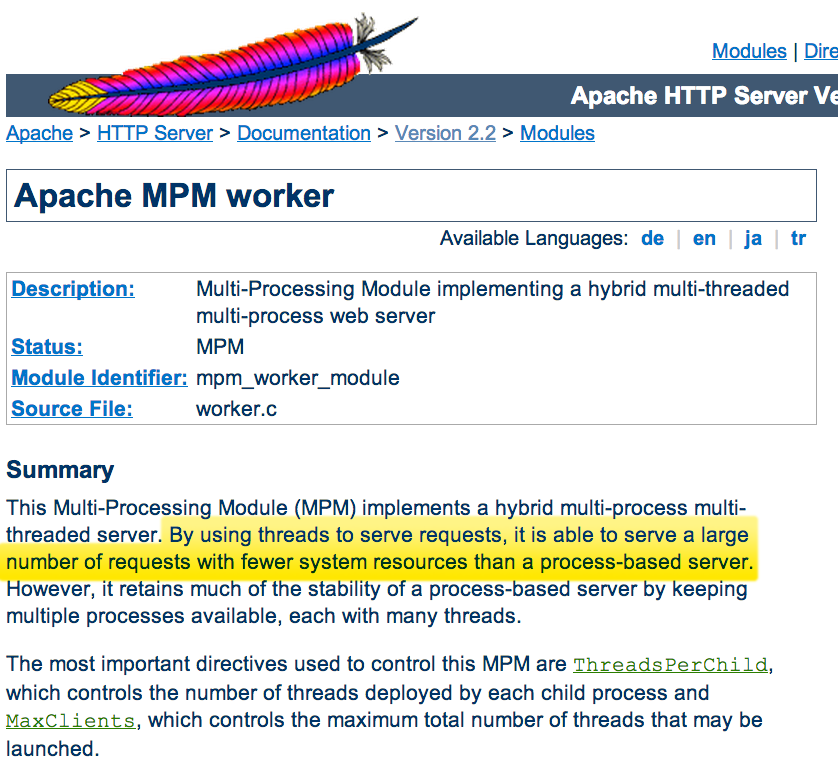
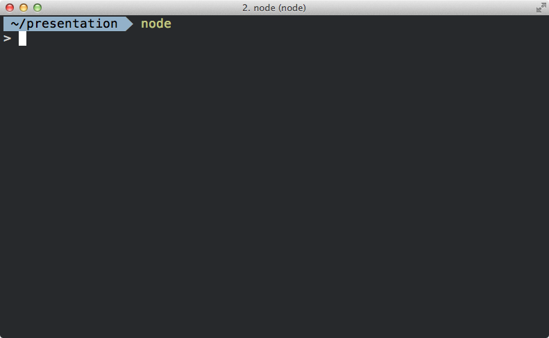
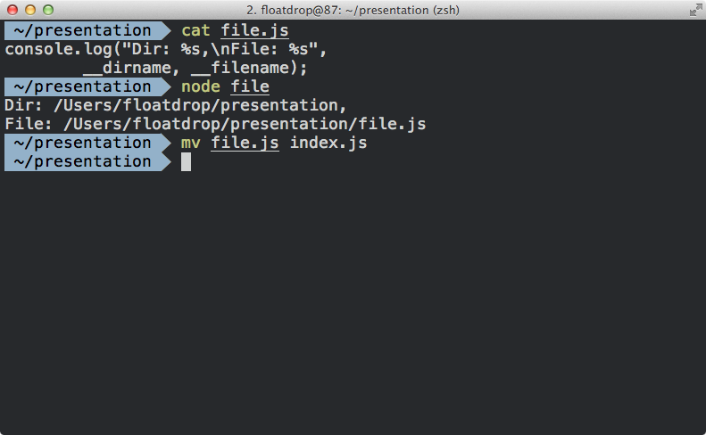
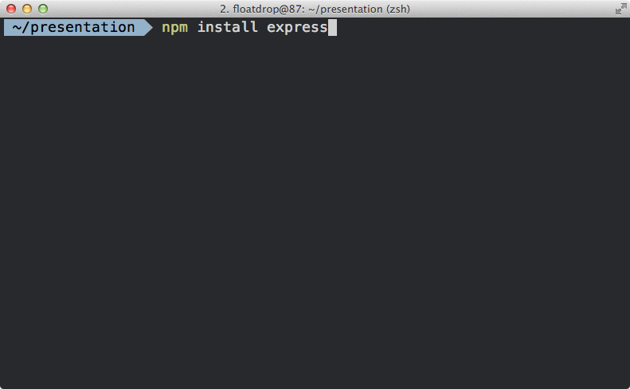

@floatdrop
Node.JS
History
bit.ly/crcfd

1987
on mouseUp
get the selection
if it is empty then as "Dial what number?"
if it is not empty then
push this card
visual effect zoom open
go to stack "Phone"
dial it
pop card
end if
end mouseUp
1987
Был написан за 10 дней
Function as first-class objects
Расчитан на однопоточность
1995
AJAX
2005
Node.JS
JavaScript on server
2009
Apache + PHP = ❤

index.php
$result = mysqli_query( $con,
"SELECT * FROM Persons");
while($row = mysqli_fetch_array($result)) {
echo $row['Name']."\n";
}
file_put_contents("access.log",
"Request done")Single-thread server
Pictures from node-explained


Multi-thread server


Ryan Dahl
I/O has to be done differently.
We are doing it wrong
bit.ly/jsconf-node
event-loop сервер
event-loop server

event-loop server
goes wrong
JavaScript is slow
bit.ly/bombanulo-2"Simple" benchmark
bit.ly/dumb-test
Installing
nodejs.org/downloadRunning
Running
Running
Running
Running
Running
windows
window

document

document
global
global
global
process
process
Modules
require('antigravity')
module.js
function HelloWorld () {
console.log('Hello world');
}
console.log('Module loaded');index.js
require('./module');index.js
require('./module');
HelloWorld();module.js
function HelloWorld () {
console.log('Hello world');
}
console.log('Module loaded');
exports.HelloWorld = HelloWorld;index.js
var module = require('./module');
module.HelloWorld();module.js
function HelloWorld () {
console.log('Hello world');
}
console.log('Module loaded');
global.HelloWorld = HelloWorld;index.js
require('./module');
HelloWorld();exports vs module.exports
russian.js
var en_translation = {
yes: 'Да',
no: 'Нет'
};
exports = en_translation;
exports vs module.exports
russian.js
var en_translation = {
yes: 'Да',
no: 'Нет'
};
module.exports = en_translation;exports vs module.exports
russian.json
{
"yes": "да",
"no": "нет"
}requrie('./directory')
- require('./directory/index.json')
- require('./directory/index.js')
- require('./directory/' + require('./directory/package.json').main);
require('http')require('express')require('./index.js')require('./config.json')require('./module') // DirectorySimple web-server
Simple web-server
Simple web-server
Simple web-server
Simple web-server
index.js
var http = require('http');
function helloService(request, response) {
response.end("Hello, stranger!");
}
var server = http.createServer(helloService);
module.exports = server;Run, Forest, Run!
Run, Forest, Run!
Run, Forest, Run!
Run, Forest, Run!
Simple web-server
node_modules
Run, Forest, Run!
Run, Forest, Run!
Run, Forest, Run!
Run, Forest, Run!
Look up
nodejs.org/api/modules.htmlLook up

require("antigravity")
in /home/user/programm/library/index.js
- /home/user/programm/library/node_modules/antigravity
- /home/user/programm/node_modules/antigravity
- /home/user/node_modules/antigravity
- /home/node_modules/antigravity
- /node_modules/antigravity
NODE_PATH
$HOME/.node_modules, $HOME/.node_libraries, $PREFIX/lib/node
node_modules/antigravity.js
module.exports = new Date();index.js
console.log(require("antigravity"));node_modules/antigravity.js
console.log(module);
module.exports = new Date();Circular dependencies
Circular dependencies
a.js
var b = require('./b.js');
console.log("B: ", b);b.js
var a = require('./a.js');
console.log("A: ", a);Circular dependencies
a.js
module.exports.hello = "Hello from A";
var b = require('./b.js');
module.exports.helloFromB = b.hello;
console.log("B: ", b);b.js
module.exports.hello = "Hello from B";
var a = require('./a.js');
module.exports.helloFromA = a.hello;
console.log("A: ", a);var module = require('http');
module.globalAgent = {};
console.log(require('http').globalAgent);Unfinished copy
Unfinished copy

modulecounts.com
Installing module
Installing module

Installing module
Installing module
Installing module
package.json
{
"name": "express",
"version": "3.4.4",
"dependencies": {
"connect": "2.11.0", "commander": "1.3.2", "range-parser": "0.0.4", "mkdirp": "0.3.5", "cookie": "0.1.0", "buffer-crc32": "0.2.1", "fresh": "0.2.0", "methods": "0.1.0", "send": "0.1.4", "cookie-signature": "1.0.1", "debug": "*"
},
"devDependencies": {
"ejs": "*", "mocha": "*", "jade": "0.30.0", "hjs": "*", "stylus": "*", "should": "2", "connect-redis": "*", "marked": "*", "supertest": "0.8.1 - 1"
},
"main": "index",
"bin": {
"express": "./bin/express"
},
"scripts": {
"prepublish": "npm prune",
"test": "make test"
},
"engines": {
"node": "*"
}
}
Express application
var express = require('express');
var app = express();
app.get('/', function(req, res) { res.end('Hello!'); });
app.listen(3000);
Event loop
bit.ly/kantor-node
node.cc
env-inl.h

loop.c
loop.c
static int uv__loop_init(uv_loop_t* loop, int default_loop) {
// ...
RB_INIT(&loop->timer_handles);
QUEUE_INIT(&loop->wq);
QUEUE_INIT(&loop->active_reqs);
QUEUE_INIT(&loop->idle_handles);
QUEUE_INIT(&loop->async_handles);
QUEUE_INIT(&loop->check_handles);
QUEUE_INIT(&loop->prepare_handles);
QUEUE_INIT(&loop->handle_queue);
QUEUE_INIT(&loop->pending_queue);
QUEUE_INIT(&loop->watcher_queue);
err = uv__platform_loop_init(loop, default_loop);
// ...
}Platform init
- kqueue
- epoll
core.c : 258
int uv_run(uv_loop_t* loop, uv_run_mode mode) {
r = uv__loop_alive(loop);
while (r != 0 && loop->stop_flag == 0) {
// ...
uv__update_time(loop);
uv__run_timers(loop);
uv__io_poll(loop, timeout);
// ...
}
}static int uv__loop_alive(uv_loop_t* loop) {
return uv__has_active_handles(loop) ||
uv__has_active_reqs(loop) ||
loop->closing_handles != NULL;
}Fibonacci
function fibonacci(n) {
if (n < 2)
return 1;
else
return fibonacci(n-2) + fibonacci(n-1);
}
require('http').createServer(function (req, res) {
res.end("40: " + fibonacci(40));
}).listen(8005);Fibonacci
Requests per second: 0.61
Time per request: 1634.748 ms (vs 5676 ms)Fibonacci
function fibonacci(i, n, f1, f2, res) {
if (i >= n)
res.end(n + ": " + (f1 + f2));
else
setImmediate(function() {
fibonacci(i + 1, n, f2, f1 + f2, res);
});
}
require('http').createServer(function (req, res) {
fibonacci(0, 1473, 1, 1, res);
}).listen(8005);Fibonacci
Requests per second: 264.55
Time per request: 3.780 ms